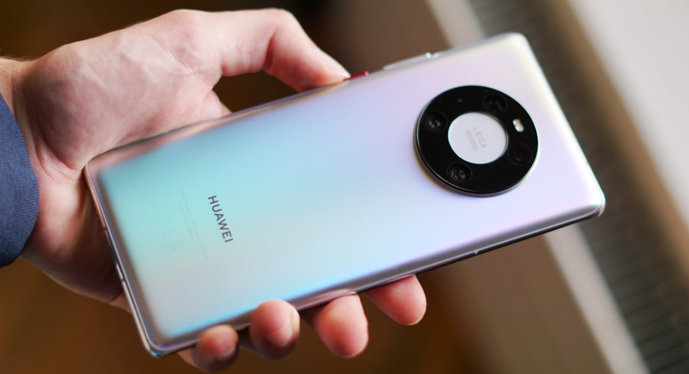

En Estados Unidos comenzó a utilizarse en 2018. Chile anunció el lanzamiento del proceso de licitación del espectro. En nuestro país se espera que el 5G llegue después de 2022 o 2023.
Mientras que a nivel mundial ya se habla de tecnología de sexta generación o “6G”, que comenzaría a comercializarse en 2028, y en algunos países latinoamericanos están en proceso de adopción de la tecnología “5G”, en Argentina resulta verdaderamente incierto cuándo será el lanzamiento de esta última.

Lo anterior da cuenta de cuán relegado se encuentra el país en cuanto a transformación digital. Y es que mientras que en Estados Unidos el 5G comenzó a utilizarse en 2018 y, recientemente, el Gobierno de Chile anunció el lanzamiento del proceso de licitación del espectro para el desarrollo de redes 5G, la primera en América Latina, en Argentina, uno de los últimos de la región en incorporar el 4G, se espera que el 5G llegue después de 2022 o 2023.
El deportivo de Elon Musk aún se desarrollará durante todo este año.
El Tesla Roadster es un coche deportivo que está en fase de desarrollo. Aún no tiene fecha de presentación, pero las últimas informaciones indican que será en 2022, el mismo año en el que dará comienzo su producción. Elon Musk ha insinuado que llegará después que el Cybertruck, de ahí el tiempo de espera. Se sabe que el modelo base acelerará de 0 a 100 en 1,9 segundos, pero habrá versiones más radicales. Costará unos 200.000 dólares.

El Tesla Roadster es la segunda generación del modelo, que originalmente debutó en 2008 sobre un chasis Lotus Elise. Se ha insinuado desde 2014. Originalmente su lanzamiento estaba previsto para 2020, pero sucesivos retrasos han acabado por retrasarlo, como poco hasta 2022. Las últimas informaciones apuntan a que durante ese año empezará su producción. Antes de afrontar el Roadster, Tesla quiere terminar la fábrica de Berlín, ampliar la capacidad de la de Shanghái, aumentar la producción del Tesla Model Y y llevar a fabricación el Tesla Cybertruck y el Tesla Semi.
Un diseño inmejorable y una cámara que cubre todas las necesidades se enredan frente a un tibio reemplazo de los servicios de Google.
Los que conocemos la marca sabemos que la línea Mate es siempre lo mejor que Huawei puede ofrecer en cuanto a diseño, prestaciones y velocidad a nivel de industria. Son teléfonos que siempre empujan un poco más allá el límite de lo que un teléfono que no es de Apple puede llegar a hacer. Y el modelo de este año no es la excepción.

Por supuesto, todo comienza al ver la materialidad del equipo: una pantalla OLED de 6,76 pulgadas prácticamente sin bordes, dos superficies de vidrio unidas por un marco de aluminio y un acabado trasero metálico tornasol que te deja con la disyuntiva de no saber si colocamos una carcasa para protegerlo o bien lo usamos “al desnudo” para admirar su belleza y suavidad en la mano.
Con respecto al año pasado no tiene muchos cambios, salvo el regreso de los botones de volumen que, para ser sinceros, nunca tuvieron que haber desaparecido, y un panel redondeado al costado pero no de forma excesiva, sino que lo suficiente como para sentirlo cómodo y además no errar a la hora de tipear. Y su cámara en forma de anillo destaca en un mercado lleno de celulares con protuberancias en su parte trasera y además evita la asimetría que suelen dejar estos módulos vistos en los iPhones o Galaxys del mundo.
¡Acuerdese de Suscribirse para recibir todos los beneficios!